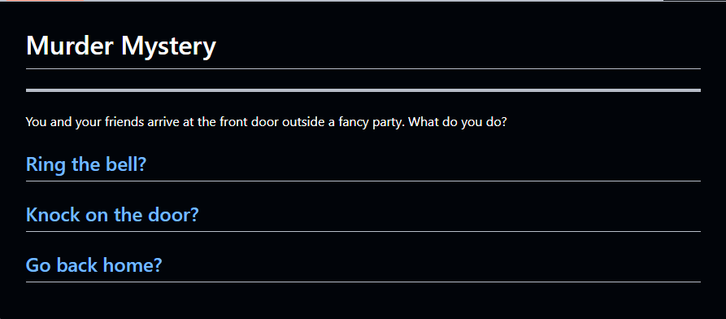

I worked with 2 others to create a choose your own adventure project, using IDE.
It was very enjoyable because we had a lot of freedom on what we wanted to do, so the only limiter was ourselves and overall, i'm very proud of the work I did and how my part of the story turned out.
If possible I would like to do another project like this and work with others on a different type of CYOA story because I did a murder mystery CYOA and want to try a different one. Working on the CYOA was always entertaining and when making the adventure was, I often found myself being so engrossed in it, I would lose track of time.
The CYOA project I worked on!
A challenge I had was I often got too focused on one path and would continue working on that one path, so I would have one story that was really long and another path that was short. So a way to solve this was to manage my time on each path so, I would spend time on one, then switch to another one to make sure that each path would get tended to and not be left out.
Another challenge I had was that my partners weren't too responsive and would not communicate, they also asked for help lots of the time so I had to choose between doing my part or helping them do theirs. I also found them going off task a lot. So to solve this I would help my two partners and try to keep them on task, while also doing little bits of my work but mostly focused on helping them. While I wasn't able to do much work at school, I made up for it by working on the project at home.
One Takeaway from this project was that dealing with unresponsive teammates helped me take more of a leadership role when working on the project, so I kept my partners on track while making up for it on my own time.
Another takeaway is balancing work as well as managing my time correctly. This is shown when I would parts of my time helping my group mates while also contributing to the project little by little, and when I arrived home I would focus on multiple paths to make the CYOA experience the best for the viewers by not spending lots of time on one path.
